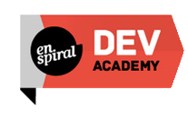

{
__desc: ' '
__skills: [
_____'Javascript & Ruby on Rails developement'
__]
__training: Enspiral_Dev_Academy

Enspiral Dev Academy had me immersed in an industry-like environment and introduced to tools, principals and industry best practise. Dev Academy places a strong focus on building real things with other people and learning new technologies. In course, I made heavy use of both Ruby and Javascript, but also used a wide range of other technologies or tools including Angular, Node.js and Ruby on Rails. Although we were code constantly there is a strong emphasis on ‘softer’ skills such as communication, self management and Agile principles. Dev Academy has played a significant role in my newfound passion for constructive feedback in fuelling growth of both myself and others.